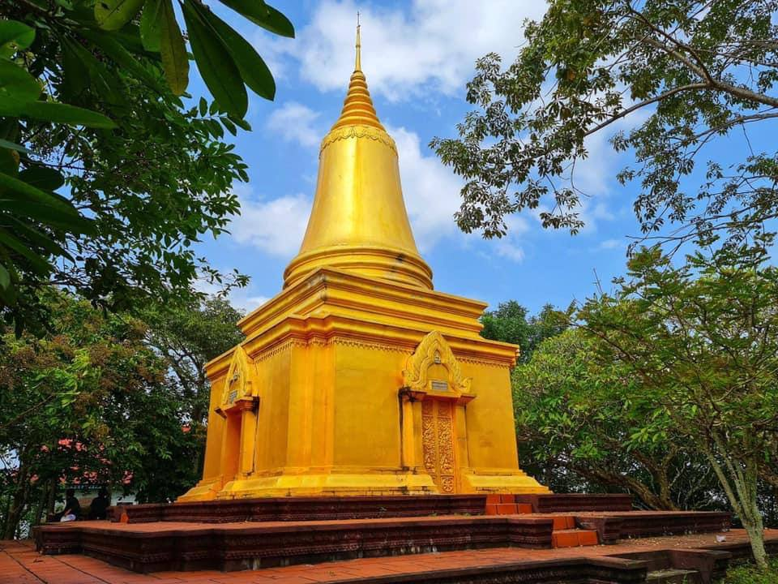
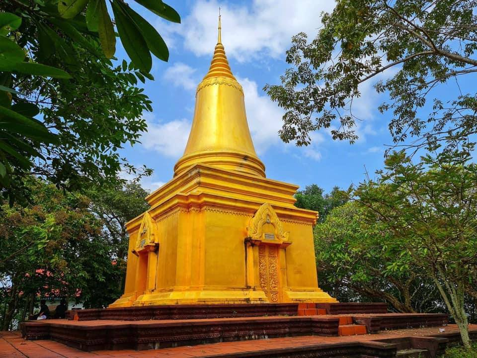
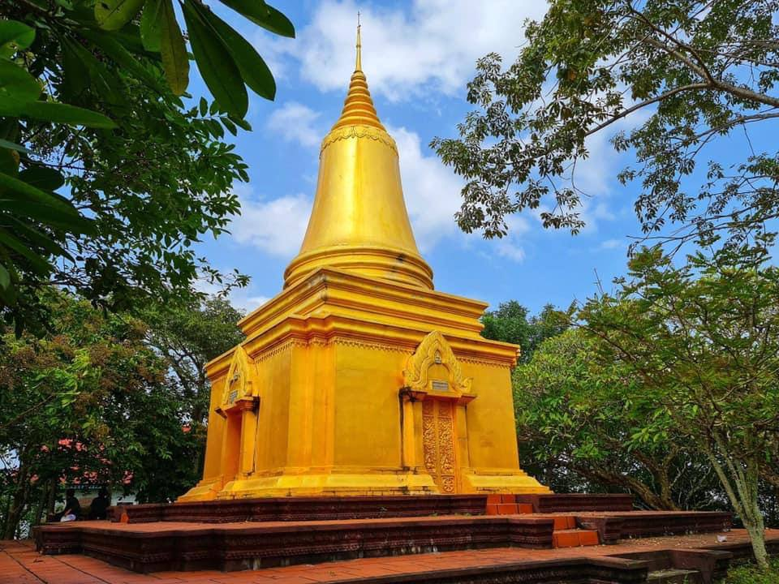

ភ្នំសន្លុងមានចម្ងាយប្រមាណជាង២០គីឡូម៉ែត្រពីទីរួមខេត្តតាកែវបើយើងធ្វើដំនើតាមផ្លូវជាតិលេខ២ដល់វិទ្យាល័យថ្នល់បែកសន្លុងបត់ស្តាំប្រហែលជា៦គីឡូម៉ែត្រនឹងបានឃើញភ្នំមួយដ៏ខ្ពស់សន្លឹមបង្អួតខ្លួន កណ្តាលអាកាសលម្អរទៅដោយរុក្ខជាតិតូចៗពណ៏ក្រហមលាយខៀវព្រោះតែរងនូវឥទ្ធិពលកម្តៅនៃរដូវប្រាំង នោះគឺជាភ្នំសន្លុងដែលនៅលើកំពូលភ្នំមានព្រះវិហ៊ានិងរូបបដិមារកមួយយ៉ាងធំដែលអាចមើលឃើញយ៉ាងច្បាស់ពីចម្ងាយ។ ជាភ្នំមួយខ្ពស់សន្លឹមបង្អួតខ្លួនកណ្តាលអាកាស មានកម្ពស់ ៧០ម. លម្អទៅដោយរុក្ខជាតិតូចៗពណ៌ចម្រុះ។ នៅលើកំពូលភ្នំ មានព្រះវិហារនិងរូបបដិមារកមួយយ៉ាងធំដែលអាចមើលឃើញយ៉ាងច្បាស់ពីចម្ងាយ មានព្រះនាម «ព្រះអង្គសិលានុភាព»។ នៅលើកំពូលភ្នំនេះ មានសំណល់ប្រាសាទបុរាណពីសម័យមុន ដូចជាមេទ្វារជាថ្មស្រទាប់ ផ្ដែរ និងបំណែកដទៃទៀត។
អ្នកស្រុកជឿថា ឈ្មោះភ្នំ ក្លាយមកពីពាក្យថា ចិនលង់ គឺចិន១សែននាក់លិចលង់សំពៅនៅជិតនេះ ហើយក៏ហៅជា ភ្នំសែនលង់ ឬសន្លុង។ ប៉ុន្តែទាំងអស់នេះគ្រាន់តែជារឿងនិទានតែប៉ុណ្ណោះទេ បើពិនិត្យមើលរចនាបថផ្ដែរដែលមាននៅទីនេះ ធ្លាប់មានប្រាសាទសម័យបុរេអង្គរ សង់នៅទីនោះ។ ទីនេះមាន លោកតា មហាសែន និង លោកយាយ ម៉ៅ ជាអ្នកត្រង់ បង់បត់នៅ គ្រប់គ្រងប្រកបដោយបារមីពូកែសក្ដិសិទ្ធិ។ ភ្នំមានជណ្តើរឡើង ៤៨០កាំ និងផ្លូវក្រាលបេតុង សម្រាប់យានយន្តបរឡើងក៏បានដែរ។ នាសម័យម្ពុជាប្រជាធិបតេយ្យ នៅជើងភ្នំជាមន្ទីរសន្តិសុខ ដែលជាទីគេបានសម្លាប់មនុស្សរាប់រយនាក់ ប៉ុន្តែអដ្ឋិធាតុត្រូវបានបាត់បង់អស់ជាច្រើន។
